Important Items
Explore the tools inside our first aid kit. Click for instructions to learn how to use them!
How to use!
Used to cover small cuts, scrapes, or blisters to protect them from infection and promote healing.
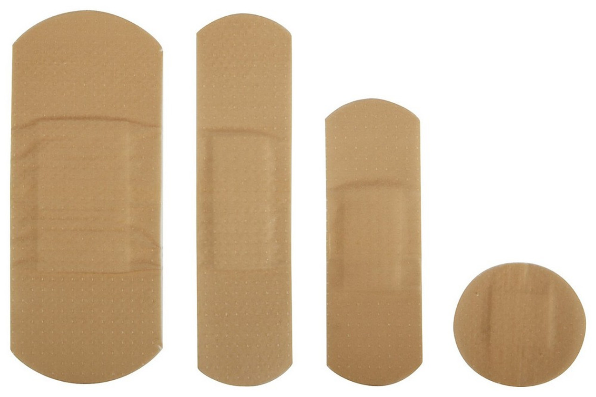How to use!
Sterile pads used to absorb blood and other fluids from wounds. They can be used with adhesive tape to secure them in place.
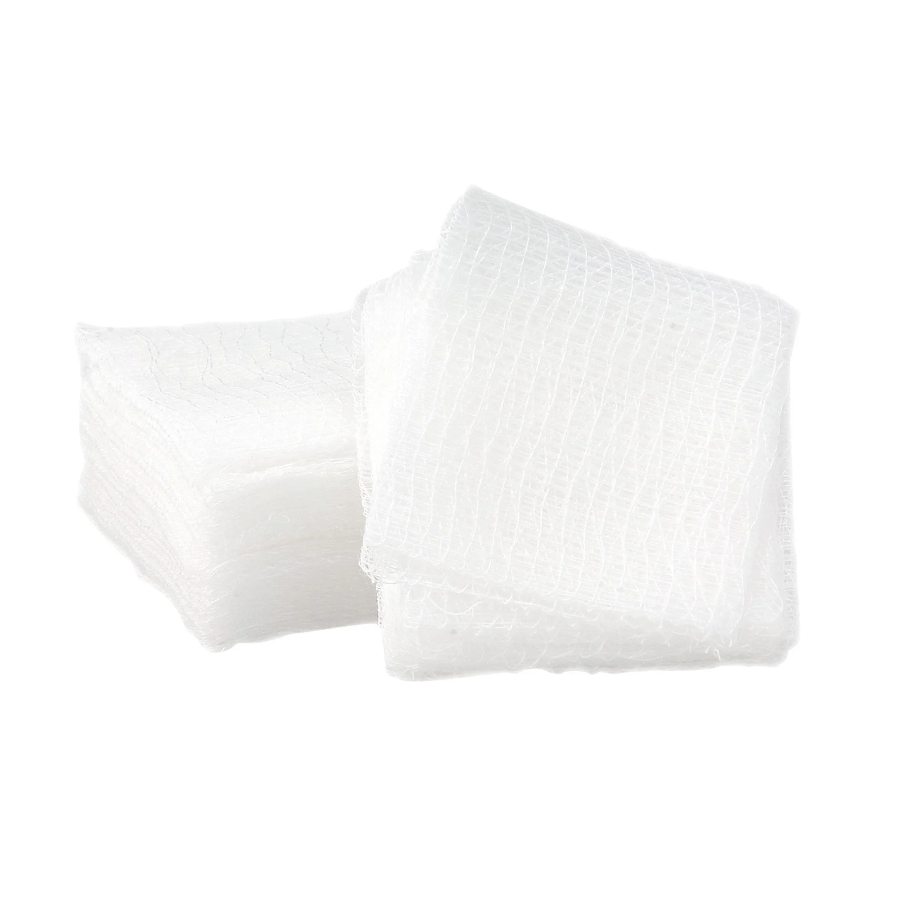How to use!
Used to check for fever by measuring body temperature.
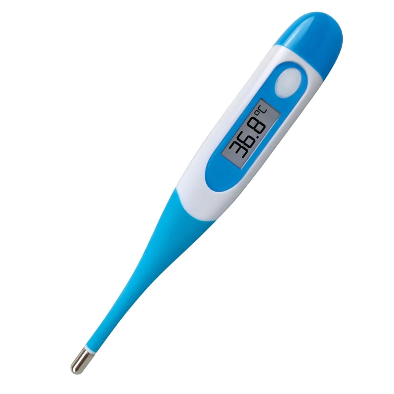How to use!
A flexible pack that can be chilled and applied to reduce swelling and numb pain from injuries like sprains or strains.
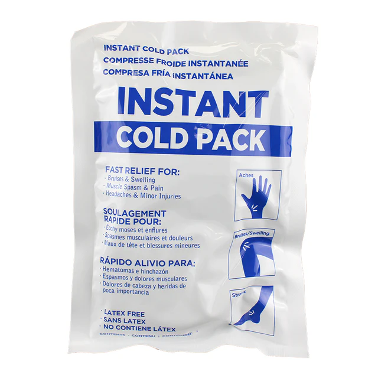How to use!
Used to secure gauze pads or dressings to skin, ensuring they stay in place over a wound.
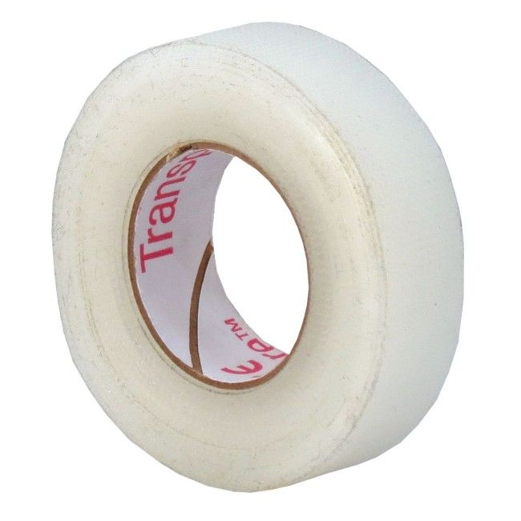How to use!
Pre-packaged wipes used to clean wounds and help prevent infection by killing bacteria.
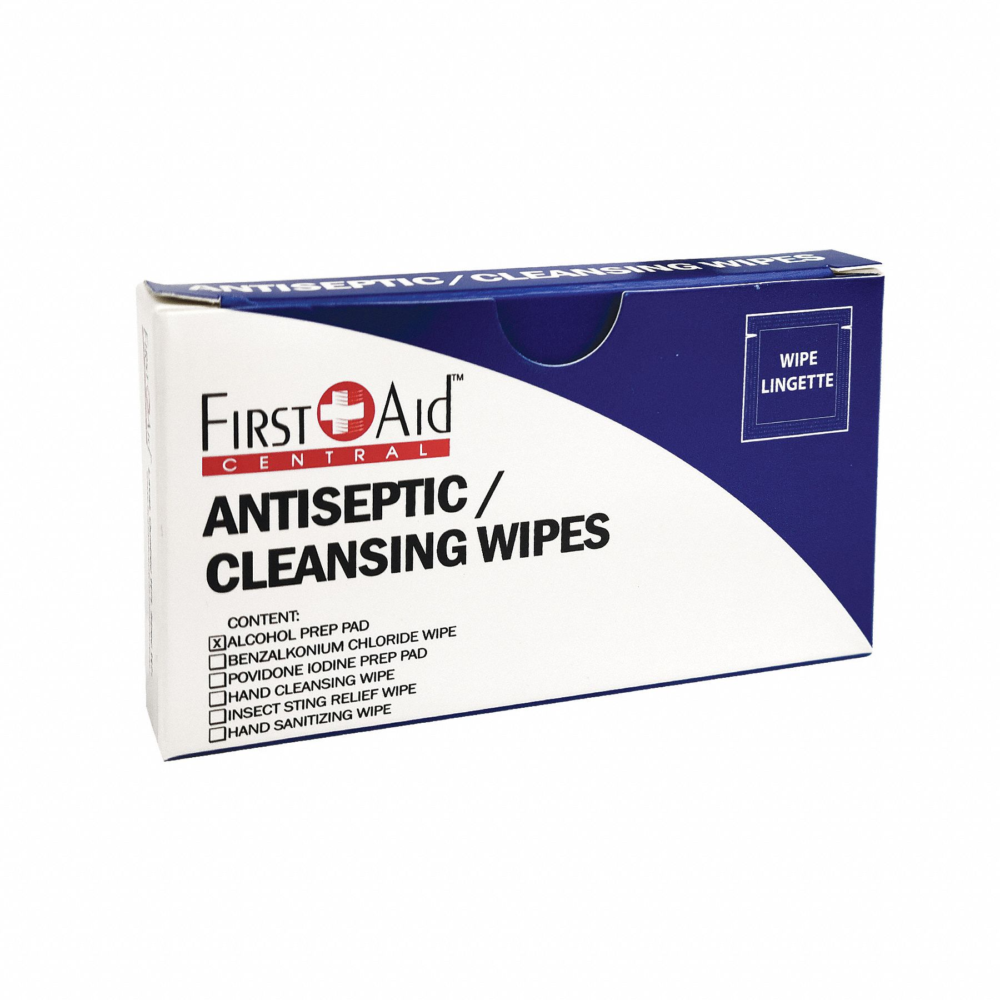How to use!
Useful for removing splinters, ticks, or debris from wounds.
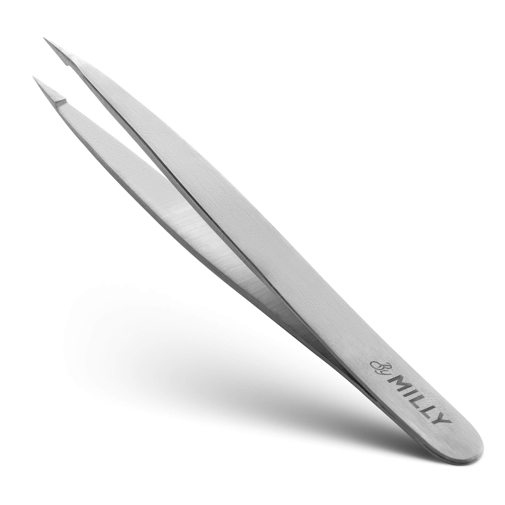How to use!
Used for cutting tape, gauze, or clothing away from an injury.
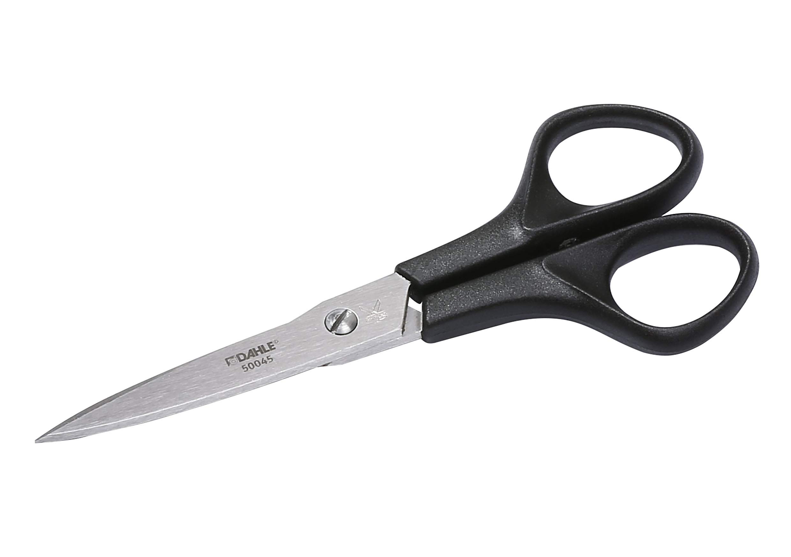How to use!
Used to wrap around sprains or strains to provide compression and support.
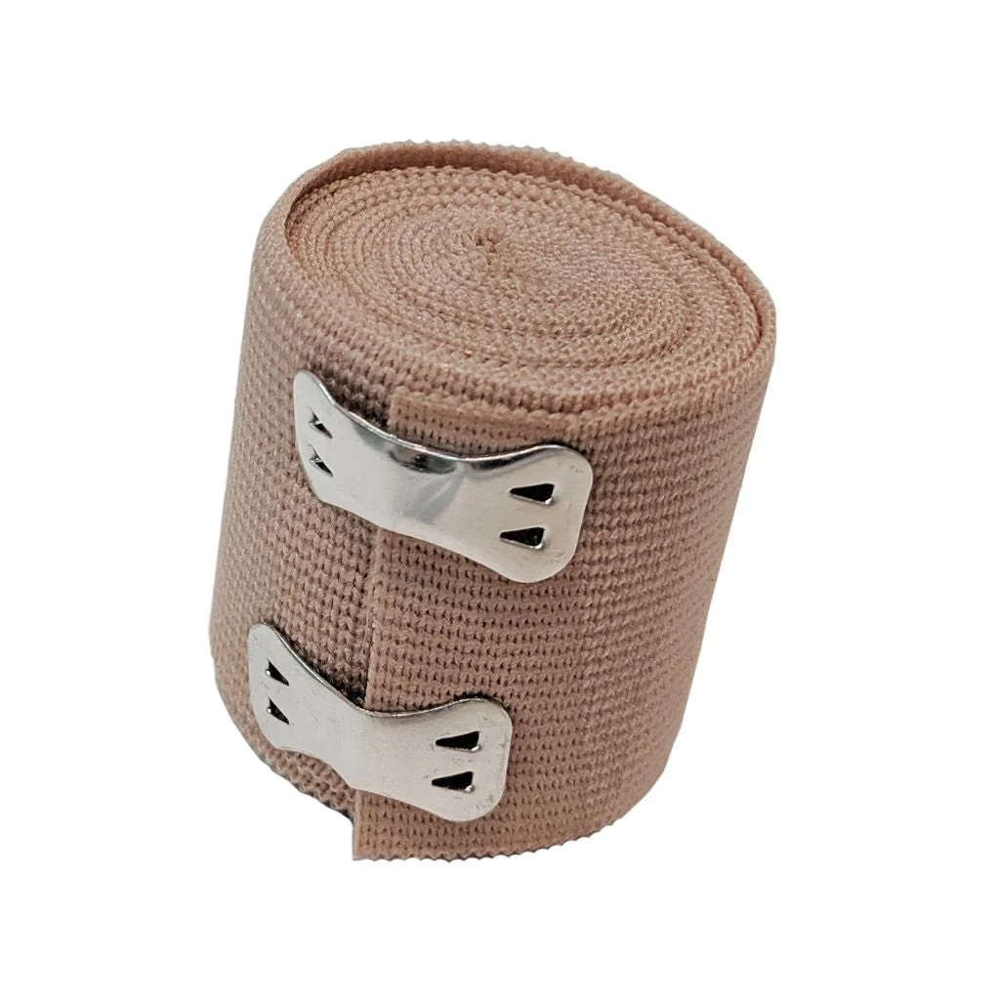How to use!
A barrier device used during cardiopulmonary resuscitation (CPR) to protect the rescuer while providing rescue breaths.
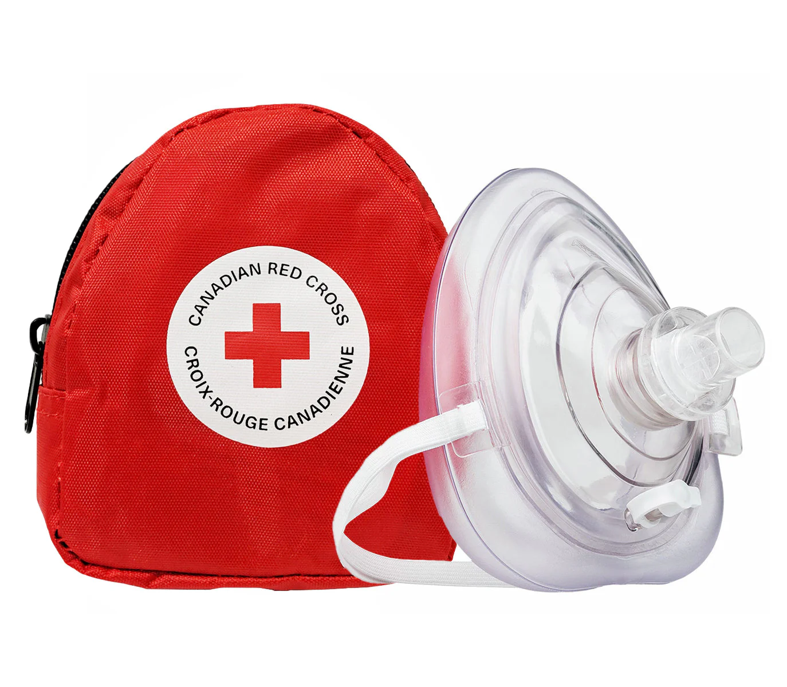How to use!
Applied to minor burns to soothe the skin and promote healing.
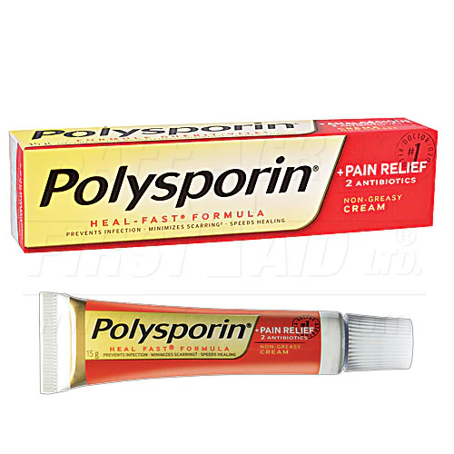How to use!
Medications used to relieve pain and reduce fever (e.g., ibuprofen, acetaminophen).
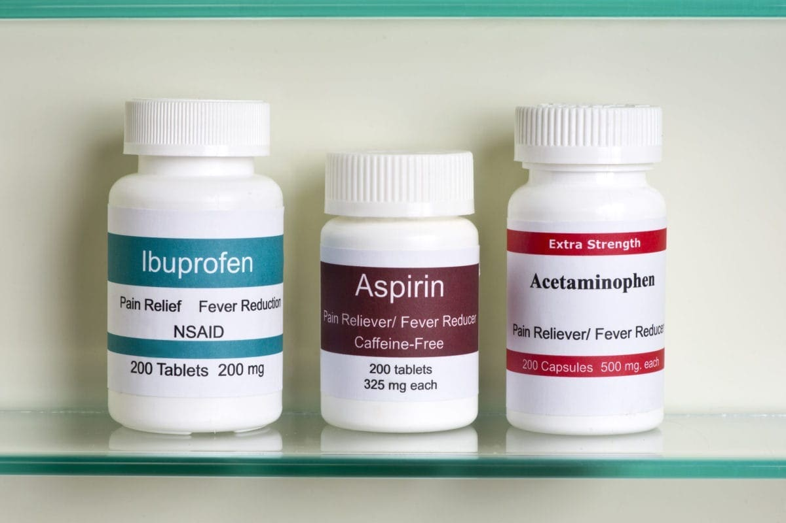How to use!
A lightweight reflective blanket used to retain body heat in case of shock or hypothermia.
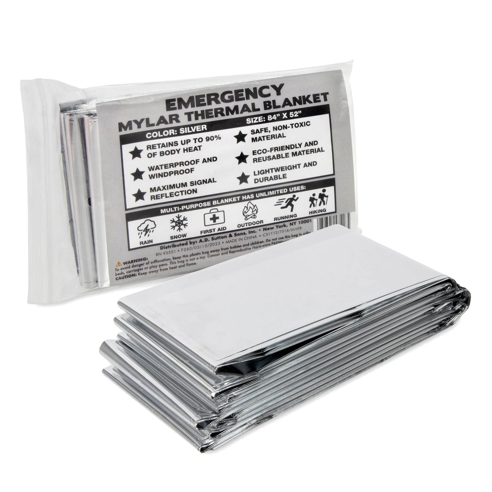